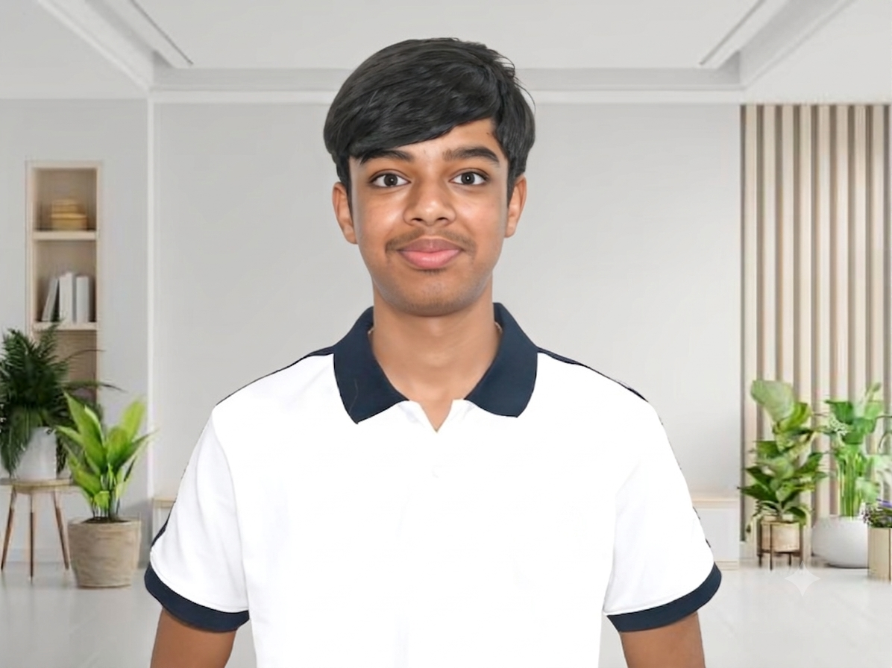

03Who I am

- Where I'm from
- Born & brought up in Dubai, UAESchooling in Jaipur, India
- School
- Jayshree Periwal International SchoolGrade 11
- Email / LinkedIn
- tanushh37@gmail.comCopies the addressLinkedIn (opens in a new tab)
I've always been drawn to trying things rather than simply watching from the sidelines. Over time, that curiosity has taken me across technology, entrepreneurship, performing arts, public speaking, competitions, and school leadership. I enjoy learning by doing, especially when there is a real problem to solve or something worth creating.
That curiosity gradually turned into action. I began exploring entrepreneurship and innovation, including building my first pitch deck for an eco-friendly products business in 2022. Since then, I have taken part in innovation competitions, developed an AI-powered school-parent chatbot called Wizmo, worked on websites and technology projects, organised events, performed, spoken publicly, and taken on student leadership responsibilities.
Today, I am particularly interested in artificial intelligence, computer science, entrepreneurship, and using technology to create opportunities for others. I am currently working on a rural digital-skills initiative while preparing for the Indian Computing Olympiad and exploring future AI-focused ventures. I'm still figuring out exactly where I will end up, but I know I want to keep building, learning, and doing work that matters.
Not a generic interests list — open anything below for why it actually holds my attention.
- Curiosities
- Hobbies
- Causes
- Values
- Just for me
Curiosities
Artificial Intelligence
I am interested in how AI can move beyond automation and become a practical tool for solving problems, creating products and expanding access to opportunities.
See WizmoBackground
Where I'm from
Born and brought up in Dubai, UAE, where I still live — schooling in Jaipur, India.
Habits
Mornings or late nights
All-nighters.
Favourites
Preferred number
Favourites
Comfort food
Pizza / Pasta.
Preferences
How you like to work
On my laptop at night, when I can focus without distractions.
Favourites
A song on repeat lately
Viva La VidaColdplay.
Personality
Introvert, extrovert, or depends
Extrovert.
Right now
Currently preparing for
The Indian Computing Olympiad.
Favourites
A place that feels like you
A horse riding arena or ground.
Preferences
Handwritten or typed
Typed.
Skills
Open a skill and see exactly where it came from.